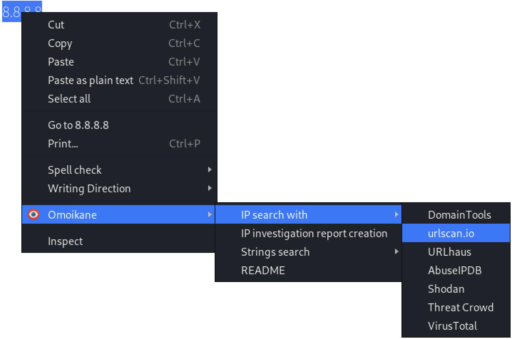
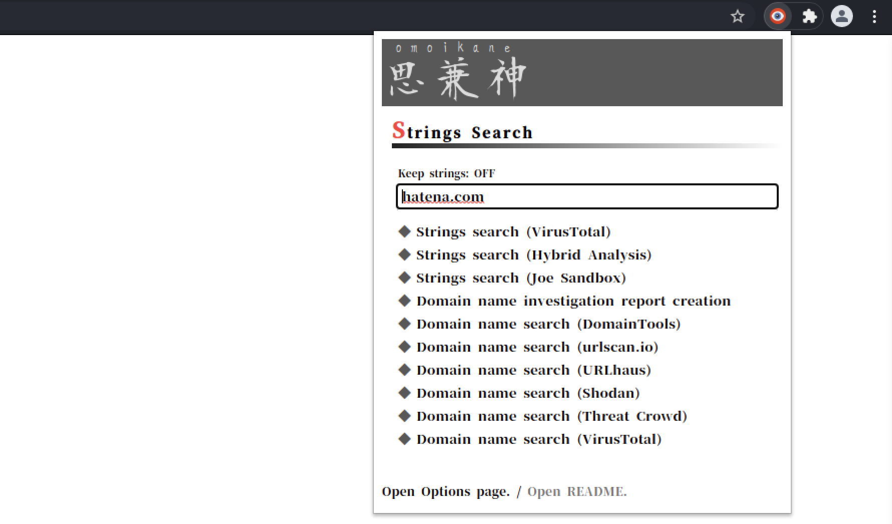
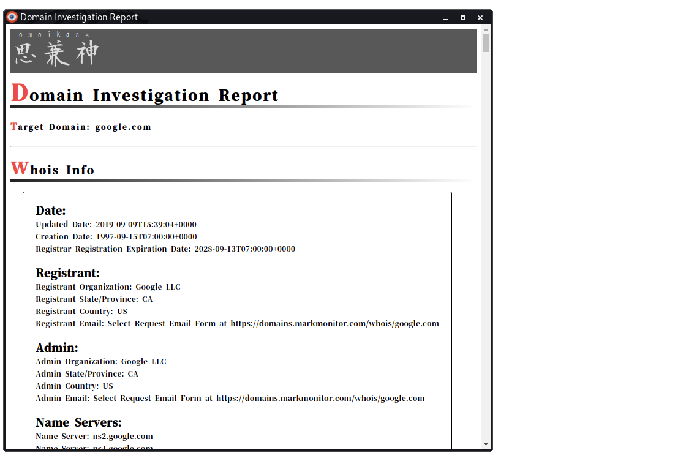

Omoikane
マルウェアアナリスト向けのOSINTサポートツール。
リリースノート
- V 1.2:
- CSSファイルにより結果ページのデザインを変更しました。
- メッセージのローカライズ。
- V 1.1:
- ポップアップメニューからの検索機能を追加しました。
- V 1.0:
インストール
- 「Omoikane」ディレクトリをローカルにコピーします。
- GoogleChromeブラウザを起動します。
- 拡張機能管理ページを開きます。 (
chrome://extensions/)
- 「開発者モード」をオンにします。
- 「パッケージ化されていない拡張機能を読み込む」をクリックし、「Omoikane」ディレクトリを選択します。
特徴
全般
コンテキストメニューから検索

ポップアップメニューから検索

デファング
多言語サポート
アクター名
マルウェアファミリー名
IP アドレス
ドメイン名
-
ドメイン調査レポート作成機能。
- Whois情報、サブドメイン、名前解決、解決履歴を含む

-
ドメイン名検索
- DomainTools
- urlscan.io
- URLhaus
- Shodan
- Threat Crowd
- VirusTotal
ハッシュ値
- ハッシュ値検索 (MD5, SHA1, SHA256)
- VirusTotal
- Hybrid Analysis
- ANY. RUN
- Joe Sandbox
SSH フィンガープリント
その他の文字列
- 文字列検索
- VirusTotal
- Hybrid Analysis
- Joe Sandbox
注意
API
この拡張機能の一部の機能は、外部の REST API と分析サイトを使用します。したがって、機能の動作は依存サイトの影響を受けます。
さらに、一部の帰属、特に別名は、他のソースとは異なる場合があります。この拡張機能のデータを使用する場合は、他のソースを確認してデータを比較してください。
API キー
この拡張機能で使用される一部の REST API は、API キーを使用する必要があります。
したがって、まず、API を提供しているサイトに登録して API キーを取得することをお勧めします。
サイトに登録していない場合、IP 調査レポート作成機能は動作しません。
使用中の API
使用法
コンテキストメニューから
- 文字列を選択します（アクター名、マルウェアファミリー名、IPアドレス、ドメイン名、ハッシュ値、SSHフィンガープリント値を使用できます）。
- ブラウザを右クリックして「Omoikane」を選択します。
- 必要な検索メニューまたはレポート作成メニューを選択します。
ポップアップメニューから
- 拡張機能ウィンドウの「Omoikane」アイコンをクリックします。
- 文字列を入力し、必要なボタンをクリックします。